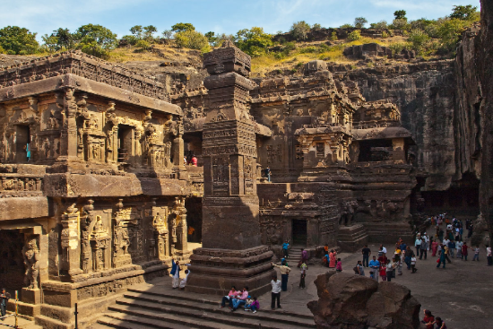
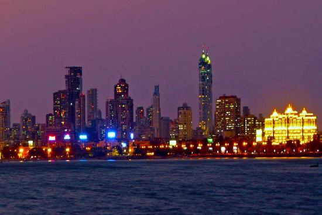

Ellora

Ellora Caves, situated near Aurangabad in Maharashtra, India, are an architectural marvel and a UNESCO World Heritage Site renowned for their rock-cut temples and monasteries. Carved into the basalt cliffs of the Charanandri Hills, the caves represent a harmonious fusion of Hindu, Buddhist, and Jain religious traditions, dating from the 6th to the 10th centuries CE. The site consists of 34 caves divided into three main groups: Buddhist, Hindu, and Jain. The Buddhist caves, the earliest structures at Ellora, feature intricate sculptures and chaityas depicting the life of Buddha. The Hindu caves, dedicated to various deities, include the impressive Kailash Temple, a monolithic structure representing Mount Kailash. The Jain caves, showcasing Jain Tirthankaras and intricate detailing, reflect Jain principles of non-violence and simplicity. Ellora Caves serve as a testament to India's religious diversity and architectural excellence, attracting visitors from around the world to marvel at their artistic beauty and spiritual significance.
Kanheri Caves
Kanheri Caves, nestled within the lush surroundings of the Sanjay Gandhi National Park in Mumbai, India, stand as a testament to the rich cultural and religious heritage of ancient India. Dating back to as early as the 1st century BCE, these rock-cut monuments comprise over a hundred caves, ranging from humble dwellings to grand prayer halls adorned with intricate sculptures and reliefs. Once a bustling center of Buddhist learning and meditation, Kanheri served as a beacon of knowledge, attracting scholars and monks from far and wide. The caves, carved meticulously into the basaltic rock, offer a glimpse into the spiritual and intellectual pursuits of the time, with elaborate depictions of Buddhist deities, scenes from the life of Buddha, and philosophical teachings adorning their walls. As a monastic complex, Kanheri provided not only shelter but also a nurturing environment for spiritual growth, with its meditation chambers, study rooms, and communal spaces fostering a sense of community among its residents. Today, Kanheri Caves continue to captivate visitors with their historical significance and architectural marvels, offering a window into India's ancient past and the enduring legacy of Buddhism in the region.
Powai Lakes

Powai Lake is an artificial lake located in the Powai Valley of Mumbai, Maharashtra, India. Constructed by the British colonial administration in the 19th century, it was created by damming the Powai River. The lake is a significant water source for Mumbai and also serves as a recreational area and an ecological hotspot in the midst of the bustling city.
The lake spans approximately 2.1 square kilometers and is surrounded by lush greenery, making it a popular spot for picnics, leisurely walks, and outdoor activities. The serene atmosphere of Powai Lake provides a welcome escape from the urban hustle and bustle, attracting locals and tourists alike.
In addition to its recreational value, Powai Lake also plays a crucial role in Mumbai's ecosystem, supporting a diverse range of flora and fauna. Birdwatchers often visit the lake to spot various species of migratory and resident birds that inhabit its shores.